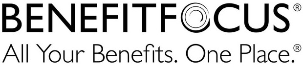

Special Thanks To

By engaging children in their own neighborhoods we show them what is possible within their own community. We serve children 4 to 17, teaching them the fundamentals of technology using Google CS First Curriculum and Code.org. Our aim is to foster curiosity around Computer Science, remove the stigma, and plant the seed for Charleston's future tech talent.
Charleston Women in Tech is a collaborative effort of Charleston, South Carolina’s women leaders, educators, and tech professionals to connect, support and prepare women of all ages for careers in the technology industry. Charleston is no exception to the pervasive nation-wide deficit of women seeking, obtaining, and excelling in technology-based careers. Charleston Women in Tech seeks to achieve increased participation and achievement by women in technology through a focus on three main objectives – Education, Mentorship, and creating Community for the women in technology fields in Charleston. By focusing on these key objectives, Charleston Women in Tech ultimately seeks to create a climate that fosters progress for women and diversity in technology industries. CodeON is our first step.
51 Reid Street Charleston, SC 29403
1810 Doscher Ave, Charleston, SC 29405
5055 Lackawanna Blvd, North Charleston, SC 29405
Email us to sign up!
Charleston Women in Tech is a pending 501(c)3 and your support makes all the difference. As our class sizes grown so do our technology needs. You can also support us by shopping on our Amazon Wish List.